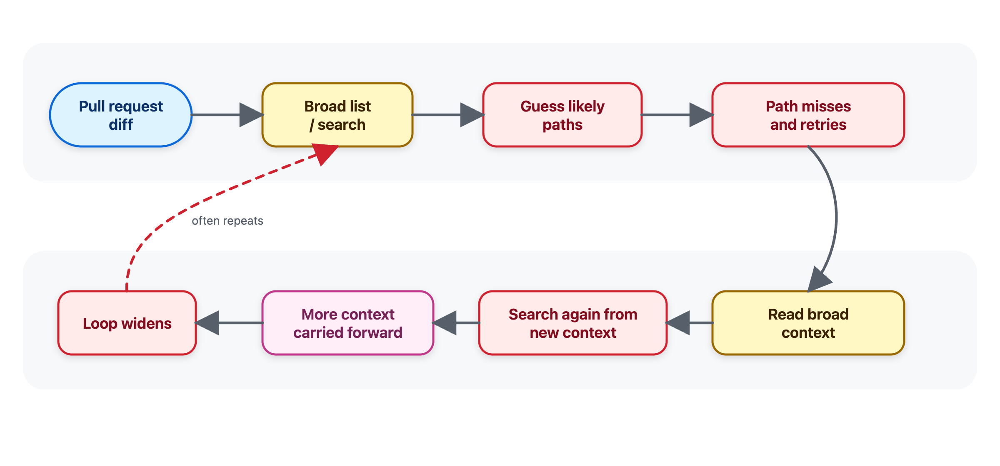
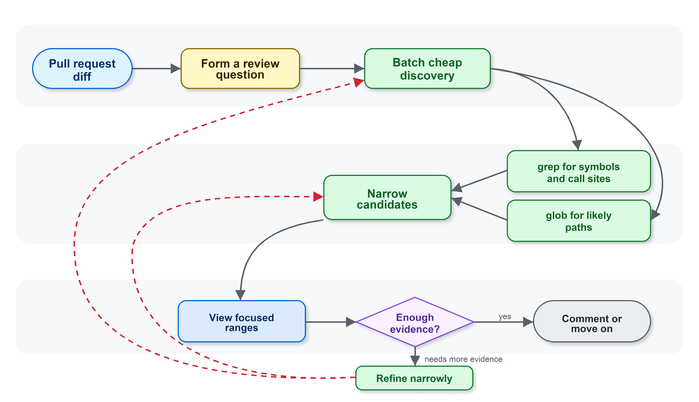

评估工具迁移时，要比较 trace，不只比较答案
相同最终输出可能来自完全不同的成本路径；分数下降也需要从调用顺序、输出量和失败恢复中找原因。
GitHub Engineering · Agent workflow postmortem
GitHub 把 Copilot code review 的专用探索工具换成共享的 grep、glob、view，结果成本更高、有效评论更少。工具没有坏，真正错位的是 agent 被教会的工作姿态。
同一组工具，会因为任务姿态不同而产生完全不同的轨迹。通用 coding assistant 倾向先地图式探索仓库；reviewer 应从 diff 形成具体问题，先用 grep/glob 缩小范围，再用 view 读取最小证据。GitHub 用 benchmark trace 反复校准这套节奏，最终把“浏览、读取、再搜索”改成“提问、缩小、读取、决定”。
边界也很重要：这套窄化指令适合有 diff 锚点的 code review，并没有在开放式、多轮的 Copilot CLI 任务中复现同样收益。
旧工具为早期模型设计，会自动附带更多周边代码；共享 CLI 工具更通用、更易维护，也能让多个 Copilot 产品复用同一套 harness。
动机很合理：减少重复实现，让 code exploration 的改进可以跨 Copilot code review、Copilot CLI、cloud agent 等产品传播。
但旧工具并不是薄封装。搜索目录或读取范围时，它们会连同周围代码一起返回。这增加 token 成本，却符合早期 agent 的行为特点：工具调用少，模型也不擅长主动补齐上下文，所以一次多给一点往往有帮助。
在打开代码前发现候选文件与目录。
寻找文本、符号与调用点。
路径或范围已知后读取相关内容。
Agent 把“审查一段变更”做成了“理解一个仓库”：搜索越来越宽、猜路径、读取越来越多，再把这些上下文一路带进后续推理。
广泛探索对“理解仓库”或“计划一次修改”可能很有用，但 reviewer 通常从 diff 开始，只问与风险有关的局部问题：谁调用了这个函数？配置键是否还有其他使用者？附近是否有同模式的测试？哪一小段代码足以解释行为？
关键机制是：每次工具结果都会进入 agent 的工作上下文。它不是一次性终端输出。无关文件越多，后续每一步就越贵，也越容易失去对 pull request 证据的聚焦。
像在理解整个仓库
始终被 diff 问题锚定
grep / globview
改动在文字上很小，在轨迹上很大：从“检查可能相关的仓库上下文”变成“锚定 diff，先缩小，再读取精确证据”。
新的指导要求先从 diff 形成明确 review questions；路径不确定时用 glob，找符号、调用点与候选文件时用 grep；便宜的发现步骤先批量做，只有知道文件和范围后才调用 view；读取也尽量批量、聚焦。
原文例子 · authorization helper
不要问“把所有调用这个 helper 的文件全文给我”，而要问：“是否有 request-handling caller 依赖旧行为？”
grep 因输入失败，怎样避免进入大范围探索？做一次更简单、正确转义的搜索。不要把一个小的工具错误扩张成全仓库浏览。
转向 glob 发现真实候选路径，而不是继续猜相邻路径，再读取碰巧存在的文件。

团队能对同一批 review examples 反复运行、比较 tool trace、修改说明，再验证成本与质量是否一起改善。
最终分数只能告诉你“变了”，trace 才能回答“为什么变”。GitHub 的内部 benchmark 记录了工具调用、输出量、错误位置，以及搜索是在向证据收敛还是继续扩张。
Agent 是先缩小范围，还是先读取大片代码？
独立搜索有没有批量执行，减少交替往返？
view 是否只在已有明确理由时调用？
指令变化是真正减少错误，还是把错误移到别处？
Trace 是否持续围绕 diff 中的证据？
成本下降时，关键 review quality 是否被保住？
最有用的观察：Agent 的工具调用总数相近，但更多调用开始花在相关证据上，而不是反复扩大搜索范围。
共享 harness 提供一致工具，专用指令定义任务姿态，benchmark trace 让行为可见。三者一起，才把 regression 翻成了可上线的收益。
相对 control 的平均 review cost 降幅。原文没有给出绝对成本，也没有宣称所有质量维度都变好。
Code review 有明确的 diff 和审查问题；CLI 面对更开放、交互式、多轮的编码任务，探索本身常常就是工作的一部分。相同的 grep、glob、view 可以复用，但不能把同一套窄化姿态无差别复制过去。
工具不是幕后实现细节。它定义 agent 看见什么、怎样搜索、带走多少上下文，以及何时认为证据已经足够。
工具描述更像 API 文档：不是告诉 agent “这里有什么”，而是在塑造它“应该怎样工作”。
相同最终输出可能来自完全不同的成本路径；分数下降也需要从调用顺序、输出量和失败恢复中找原因。
Review 的证据从 diff 向外扩展；开放式编码任务可能先需要地图。工作流应显式反映这种差异。
GitHub 并不是简单压缩工具调用，而是让相近数量的调用更多地命中真实 review evidence。
工具实现可以统一，产品级 instructions、失败恢复策略和 benchmark 仍需针对具体任务定制。